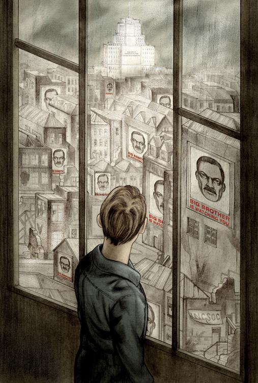

一
四月中明朗清冷的一天。钟楼报时十三响。风势猛烈，温斯顿·史密斯低着头，下巴贴到胸前，不想冷风扑面。他以最快的速度闪进胜利大楼的玻璃门，可是狂风卷起的尘沙还是跟着他进来了。
一进门厅就闻到煮卷心菜和霉旧地席的气味。门厅一边尽头的墙上贴上一张大得本来不应在室内张贴的彩色图片。图片上是一张超过一米长的汉子的脸，看来四十五岁模样，留着浓浓的小胡子，轮廓还算粗犷中带细。温斯顿拾级走上楼梯。即使在最顺利的日子，这电梯也少见运作正常，何况现在白天里连电源都关掉。“仇恨周”快到，一切都得节省。温斯顿住八楼，虽然才三十九岁，但右足踝生了静脉曲张，只好慢慢地走，中途还停下来休息好几次。每上一层楼，就看到悬在电梯对面那张大彩照凝视着你。这彩照设计特别，无论你走哪一个方向，那双眼睛总跟着你。图片下面有一个说明：老大哥在看管着你。
温斯顿一踏入自己的房间，就听到一个运腔圆润的声音，正在一板一眼地念着大概是与生铁生产有关的数字。房间右边的墙上嵌了一块长方形的铁板，看似一面蒙蒙的镜子。那声音就从那儿来的。温斯顿调节了一下开关，声音低了下来，但生产数字仍清晰可闻。这铁板就是“电幕”，画面明暗可以调节，却是不能完全关掉的。他移步窗前。本来瘦小的温斯顿，穿上党的制服蓝布套头衣服，更显得瘦弱了。他头发金黄，脸色红润，只是皮肤被劣质肥皂、笨钝的刀片和刚告一段落的严冬天气折磨得粗糙不堪。
即使从紧闭的窗子望出去，外边的世界仍是冰冷的。街道上，碎纸片和尘沙随风卷起，翻滚成无数的大小旋涡。艳阳高张，天边一抹蓝，但除了无所不在的彩照外，再也看不到什么颜色。黑髭大脸在每一个要塞角落瞪眼望着你。温斯顿对面房子的前面就有一张：老大哥在看管着你。那双黑眼睛目光如电，直照他心底。街道上有一张彩照的一边脱落下来，随风舞荡，照片下面的两个字，“英社”——英国社会主义——也因此时隐时现。远处有一架直升飞机时而在人家的屋顶掠过，像一只大头苍蝇，盘旋一下后又窜出去。这是巡逻警察的直升机，从人家的窗子窥看里面动静。巡逻警察没有什么可怕的，思想警察才要命。

温斯顿背后那个电幕声音还是喋喋不休地在报告生铁生产数字和第九个三年计划的超额完成。电幕能放能收，不管你在房内说话的声音压得多么低，这机器还是一样收听得到的。而只要你站着或坐的地方对着电幕的视野，那么你的一切举动和言语尽收老大哥眼底。当然，你无法知道他哪一分钟在看管你。思想警察究竟在哪个时候，或者用什么法子去收听哪一个人的活动，你只好自己猜猜看。说不定他们每一分钟都监视着你。总之，他们哪个时候心血来潮，哪个时候就能接近你。你活着就得作这么一个假定：你的一言一语，都被人听见，而除非在暗黑的地方，你的一举一动在别人眼中一览无遗。起先这不过是心理上一种戒备，慢慢就变成一种本能了。
温斯顿背对着电幕。这样较为安全些，虽然他也知道一个人的背部有时也会泄漏秘密的。离胜利大楼一公里，就是他办公的地方——真理部，一座屹立于四周灰暗环境中的白色大厦。这儿就是“第一号航道”的大城伦敦了，“第一号航道”可是大洋邦第三个人口最密的省份，温斯顿想着，感觉有点反胃。他尽力思索，想找回一些儿时的记忆，比对一下究竟伦敦以前是否是这个样子。那个时候伦敦的房子，是否尽是摇摇欲倒的十九世纪建筑物？屋子的四周是否都得用大木条支撑着？窗口贴满了纸板？屋顶年久失修，也是架满铁柱铁板？花园围墙破裂得东歪西倒？那些被轰炸过的地点尘土飞扬，柳枝蔓生于破瓦残垣上，以前的本来面目又如何？还有那些被炸弹夷平了的一大块一大块土地，现在都盖上了像鸡笼一样的木板平房，从前究竟是什么一番景象？可是不管他怎样集中精神去追索，童年的记忆仅是一片空白，好像以前发生过的事，既无什么背景，也不大明其所以。
真理部大厦，或者用大洋邦新语说，“迷理大厦”，那是一所在视线以内与其他景物截然不同的建筑物。白混凝土金字塔式的楼宇，高达三百多米，一层绕一层地指向苍天。从温斯顿站立的地方，可以遥望到三句精工刻出来的党的口号：
战争是和平
自由是奴役
无知是力量
真理部共有六千个房间：地面上三千间，地下层也是三千。分布于伦敦四周还有三座与真理部类似的政府建筑物。由于这些楼宇高大，环绕其间的别的房子就显得特别渺小了。站在胜利大楼的屋顶上看，这四座高楼大厦尽收眼底。这四个部门的职责是：真理部管新闻、康乐、教育和艺术；和平部管战争；仁爱部管法律和社会秩序；裕民部管经济。真理部的新语简称上面介绍过，现在另外三个部门在新语中分别叫：迷和、迷仁和迷裕。
迷仁部最是怕人，连窗户也没有。温斯顿不但没到过里面，他连靠近这大厦半公里的范围也没有涉足过。除了有公事要办，你根本不可能越此禁区一步。到了里面，你就置身在一个布满铁丝网的迷宫，除了名副其实的铜墙铁壁，还有隐蔽的机关枪阵。就是通到这大厦外围栅栏和闸口的街道，也布满了身穿黑制服、手执连枷警棍、面孔长得像大猩猩的守卫，四面巡逻。
温斯顿蓦然转身，挂着一脸祥和而乐观的表情。现在他面对电幕了，最好装装样子。他越过房间到狭小的厨房去。这个时候离开了真理部，就吃不到食堂的午餐了，而他也知道，除了留着做明天早餐用的那大块霉黑的面包外，厨房里再没有其他食物了。他从架子上取下一瓶无色液体，上面贴了一条苍白的标签：胜利杜松子酒。这东西气味难闻，油腻腻的，就像中国的米酒。温斯顿倒了一茶杯的分量，抖起精神来准备接受打击，然后就像服苦药一般一口吞下。
反应也真快，他马上面色猩红，眼泪也跟着流出来。这液体像硝酸还不算，吞下去后那种感觉，简直就像脑袋后面被人用胶棍子闷闷地擂一记。可是也不是绝无好处，腹中燃烧的感觉冷却后，这世界也跟着变得好过些了。他从一包被压得扁扁皱皱，上书“胜利香烟”的东西取了一根出来，一不小心把纸烟竖起，里面的烟草全部倒在地板上去了。掏第二根时他就加倍小心了。他回到房间，在电幕左边一张小桌子前坐下，又从桌子的抽屉里取出鹅毛笔管、一瓶墨水和一本厚厚的四开本新日记簿来。此簿装订考究，底是红色，封面是云石纸。
温斯顿房间的电幕，也不知道为了什么原因，竟安放在一个不寻常的位置上。通常都是嵌在面对进门的墙上的，因为这样可以俯览全局。他的电幕呢，居然装在对窗的墙上。墙的一边有一个浅浅的壁龛，大概初建这房子时是打算放书架用的。温斯顿现在坐的地方，就在这凹壁处。他如果身子贴得紧紧的，就会置身电幕视野之外。老大哥当然还会听到他的声音，但最少看不到他目前的动静。就是因为他房间的位置特殊的缘故，他才会想到要干他马上要动手做的事。
还有另外一个原因：他刚从抽屉里拿出来的日记本子。这真是一本美得可以的记事簿，虽然纸面因日子久了而显得微黄，但质地光滑异常，最少是四十年前的产品了。照他猜想，还可能不止四十多年呢。他是在城中一个贫民区（至于是哪一区他现时记不起来了）一家又脏又乱的旧货店的橱窗看到的。真是一见生情，看到了就忍不住马上要占有。党员照理是不准跑到普通店铺去的，因为那等于“在自由市场交易”。但规矩管规矩，却鲜见认真执行过。不说别的，除了“自由市场”，哪里还可以买到像鞋带、刀片之类的东西？温斯顿朝街头街尾匆匆张望了一下，一转身就闪进那家铺子，以二元五角把那本子买下来。在掏钱的时候，他还不清楚究竟要这东西来做什么。他把它放在公文包内，带着像犯了什么罪似的心情回家。即使不记上一字一句，他收藏着这一个空白的簿子也会“授人以柄”。
他正在着手做的事是写日记。这并不是非法的事，因为既无法律，也就无法可犯了。但假若这事被查出来，不判死刑，最少也要劳改二十五年。温斯顿拿起一个新的笔尖插进笔管，然后用嘴巴吮了一下，把油光的部分吸去。这鹅毛管钢笔可说是老古董了，现在连签名都不大用。日记簿的纸质既是这么油光水滑，不应用墨水笔书写，只有真正钢笔的笔尖才配得上。他花了一番工夫，偷偷摸摸地才把这宝贝弄来。事实上他不习惯手书；除了极其简短的便条外，其他文件他都惯于用录音书写器处理。他现在要记的东西，自然不能用这种机器代劳了。他将笔尖蘸了墨水，然后犹豫了一下。他的肝肠翻动着，要把笔尖擦上纸面是决定性的行动。他的字写得笨拙而细小：
一九八四年四月四日
把这日期记下后，他瘫坐下来，感到什么都不对劲。就说日期吧，他实在毫无把握今年就是一九八四年。不过想来也应该差不多了，因为自己三十九岁大概错不了，而自己要不是在一九四四年出生，就是一九四五年。今天要想正确指出这是哪一年发生的事，实在不容易呵。
另外还有困扰：这日记究竟为谁写的？为未来，为还未诞生的人。就在他的思想绕着那个刚写在纸上但尚待考证的年份兜圈子的当儿，一个新语中的词突然在心中涌现出来：“双重思想”。就在这一刻，他第一次体会到自己现在做的事情是多么关乎宏旨了。但你怎可以与未来通信息呢？根本上这是不可能的事。未来可能就是现在的翻版。果是那样，他说的话不会有人听。未来如果与现在不同，那么他目前的窘境也就毫无意义可言。
他还是呆呆地坐着，目不转睛地盯着面前摊开的白纸。电幕的节目已换，此时是刺耳的军乐。说也奇怪，他不但失去了表达自己的能力，连本来打算要记的事也忘了。几个星期以来他一直就准备着这时刻的降临。当时只想到，只要有勇气，事就好办。真要写出来倒不难，只要把他多年来在脑中常常出现的独白记在纸上就是。可是偏在这个时候脑袋空空，一句独白也想不起来。更要命的是静脉曲张患处这时也开始痒得难受，他不敢抓，一抓就发炎。一分一秒平白过去，除了面前的白纸、足踝上皮肤的痒、聒耳的军乐和杜松子酒造成的微醺外，他再无其他感觉。
突然他像发狂似的引笔疾书。写些什么，连他自己也仅知朦胧概念而已。他细小而孩子气的字体上下蠕动，文法错乱，最后干脆连标点符号也省掉。
一九八四年四月四日。昨夜看电影。全是战争片。妙的是地中海某处一艘满载难民的船被炸的那部。观众看到一个硕大胖子被直升机穷追扫射想泅水逃命时大叫过瘾。首先你看到他在水面划水如海豚，接着你从直升机上的机枪瞄准器看到他，后来他身上满是弹孔，周围的海水变红，一下子他好像身上弹孔进水过多而下沉。观众看到他下沉时笑声震天。这时出现了一条满载儿童的救生艇，上面有直升机盘旋。有一个貌似犹太人的中年妇女坐在艇前，手抱年约三岁小男孩。小男孩吓得惊叫，头深埋女人胸前，女人自己也吓得面色发青，但双手紧抱孩子，哄着他。她一直用身子掩护小孩，好像她的双手可以挥去机枪的子弹似的。直升机投了一个二十公斤的燃烧弹火光烘烘救生艇已成着火的火柴盒子。有一个特别精彩的镜头小孩的手在水中向天挥舞直升机前面的照相机一定紧追不舍党员特座鼓掌叫好但无产座中有一个妇人突然大嚷大叫说不应在孩子面前放映这个在孩子面前放映这个是不对的后来还是由警察带走我想她不会出事谁管无产者说什么他们的例行反应老大哥从不——
温斯顿写到这里就停下笔来，肌肉起了痉挛是原因之一，但他自己也不知道为什么一下子写了这么多废话。奇怪的是，就在他引笔直书的当儿，一件与上述截然不同的旧事，突然翻上心头，历历如绘，就如重看旧日记那么清晰。现在他才明白，就是为了这桩心头旧事，他今天才突然决定回家写日记。
这是早晨在部里发生的事——如果这种不明不白的事也说得上“发生”的话。
大概是十一点钟吧，在温斯顿的工作单位记录科内，大家忙着从暗室搬出椅子来，排列在大堂大电幕前面，准备参与“两分钟仇恨”的节目。温斯顿正准备在中间一排就位时，有两个面孔很熟但从未交谈过的人出其不意地走进来。其中一个是女的，走廊上常常会碰面。他不知她叫什么名字，只知她任职子虚科。因为有时他看到她满手油污，拿着扳钳之类的工具，他猜想她大概是保养小说生产机的技师。她约摸二十七岁吧，浓浓的黑发，面带雀斑，行动如运动员那么敏捷，神情满有敢作敢为的气概。她系着一条细长的猩红腰带，在套头工作服上一圈又一圈地拉得绷紧，正好衬托出她丰满的臀部。那红带是青年反性联盟的标志，因此可说是贞操带。温斯顿第一次看到她就讨厌。她的一举一动，都自然令你想到曲棍球场的气氛，或者是冷水浴、社团徒步旅行，再不然就是属于思想纯洁的一切。他几乎讨厌所有女人，特别是年轻漂亮的。对党盲从附和的、不假思索就相信所有口号的、业余的探子与好管闲事爱打小报告的，通常都是女人，尤其是年纪轻轻的。可是这个黑发系红腰带的女郎，他特别觉得危险。有一次他们在走廊碰上了，她斜斜地睨了他一眼，好像把他浑身看得透明一样。他一时吓呆了。虽然照理说这是不大可能的事，但那一下子他竟然怀疑她是思想警察。这以后她一接近他，他就忐忑不安，那是一种恐惧和敌意混淆起来的情绪。
第二个不速之客是奥布赖恩，“内党”的一分子。温斯顿知道他位居要职，但大概正因他高不可攀吧，温斯顿对他的身份，极其量也是一知半解。大堂里围着椅子正要就座的人，一看到穿着黑制服的内党党员走近，一时鸦雀无声。奥布赖恩块头大，脖子粗，脸部表情虽然显得幽默轻松，但轮廓粗鲁得近乎残忍。他外表虽神圣不可侵犯，态度倒还有可亲之处。他把眼镜压在鼻梁的姿势非常别致，你也不知怎样解释才好，总之看来非常文明就是。如果你还有这种印象的话，那么可以说他戴眼镜的姿势，近乎十八世纪的贵族把自己的鼻烟盒拿出来待客的神情。温斯顿在过去十一二年内，大概也见过他十来次吧。他对奥布赖恩深具好感，而这种微妙的情感，并不是纯因为看了他拳击手的体格与绅士型的风度这个鲜明的对比而产生出来的。更大的理由是温斯顿内心存在的一个信念——或者说信念不对，仅仅是一个希望吧——那就是，他希望奥布赖恩的政治观念并不完全正统。他脸上表露的某种神情，就会引诱你作这种推想。再说，浮现于他脸上的表情，非但不属正统，简直可以说是智慧的流露。总之，看此君的外貌和长相，就觉得他像一个你可以推心置腹的人，那就是说如果你可以骗过电幕的耳目，拉他单独相处一会儿的话。可是温斯顿从来没有找任何机会求证这推想对不对。事实上他即使想找机会也无法办到。这个时候奥布赖恩看了看腕表，晓得快到十一点了，显然已决定留下来参加记录科的“两分钟仇恨”节目。他就在温斯顿那排位子隔了两张椅子坐下来，夹在他们中间的是个瘦小沙色头发的女人，在温斯顿隔壁的办公室做事。那个黑头发的女郎就坐在他后面。
接着，大堂末端的大电幕传来一种令人难以忍受的撕帛裂简的声音，好像一座没有加上滑油的大机器在碾研着。这声音令人咬牙切齿，毛发直竖。“两分钟仇恨”节目开始了。
和往常一样，电幕上出现了伊曼纽尔·戈斯坦——人民公敌——的面孔。观众的嘘声马上此起彼落。那个瘦小的沙色头发女人一声尖叫，含混着既恐怖又厌恶的意味。戈斯坦是个反动的叛徒，多年前（究竟多少年前倒没有人记得了）是党的领导成员，几与老大哥平起平坐。后来他因犯反革命罪而被判死刑，不知怎的又神秘地逃脱，最后失踪了。“两分钟仇恨”节目每天不同，但每次都抓戈斯坦来当主角。他是卖国的主犯，最早玷污党的清白的人。所有后来反党卖国的罪行、阴谋倾覆的勾当、异端邪说以及离经叛道的思想，都可直接归咎于他挑拨离间的结果。他仍活着，匿藏于某一角落施展他的阴谋。也许他受别国津贴，身居海外。但也许他就躲在大洋邦某个地区，最少有这种谣言流传过。
温斯顿觉得胸口有什么东西堵住。每次看到戈斯坦出现在电幕上，难免产生复杂而痛苦的情感。戈斯坦是犹太人，脸孔瘦削，满头茸茸的白发，留着山羊胡子。这相貌聪明伶俐，可是你总觉得这人天性无耻卑鄙。他那副眼镜垂落在那长而单薄的鼻梁上，这又给人一种年迈蠢钝的感觉了。戈斯坦长得确像绵羊，连说话的声音也有绵羊的音调。这绵羊脸说的又是老一套，恶毒地攻击着党的理论清规。虽然内容夸大其词，逻辑荒诞，三岁小孩都可以看穿，但你听来难免担心说不定就有头脑不如小孩清醒的人上当。他在骂老大哥呢！对党专政制度的攻击，更是不遗余力。此外他要求马上与欧亚国缔结和约，尊重言论自由、出版自由、集会自由和思想自由。随后大声疾呼：革命已被出卖了！他说话速度既快，又爱用多音节字眼，与党的演说家常用的辞令与作风竟有点神似。他话中还夹杂了新语呢，而且出现的次数比一般党员在日常生活中所用的还要多。你以为戈斯坦这些话仅是说着玩的？你看看他发言时的背景：在他身后，一纵队一纵队欧亚大军列阵而过。这都是毫无表情的亚洲人的面孔。一队人马在电幕上涌现一刹那，消失了，又出现了一队样子看来差不了多少的人。他们军靴踏步发出的有节奏的回音，成了戈斯坦咩咩嘶叫的配乐。
“两分钟仇恨”节目开始了还不到半分钟，大堂内半数以上的人已忍不住大喊大叫了。那张自满自得的绵羊脸，再加上背景里出现的欧亚军队的惊人军力，使他们受不了。实话说，看到戈斯坦的样子，甚至想起他的名字，也会自动产生恐惧与愤怒的情绪。他成为比欧亚国或东亚国还要大的憎恨对象，因为大洋邦要是和其中一国交战，就会和另一国修好。但令人奇怪的是，尽管戈斯坦是每人憎恨和藐视的核心，尽管他的论调每天、每分钟在讲台、电幕、报纸和书上被否定、粉碎、调笑，让大家看到他话中可怜无知的部分——妙的地方就是他的影响力丝毫不减。愿意受他骗的笨蛋，前仆后继。思想警察差不多每天都捉拿到受他指挥的间谍和破坏分子。他是一支庞大影子军队的指挥官，又是立意要倾覆大洋邦政府的地下组织的统领人。这组织的名称据说叫兄弟会。又传闻戈斯坦写了一本总其异端邪说之大成的魔书，在本国和海外秘密流传。此书无名，如果有人需要提到，只说那本书。可是这些事仅属传闻。普通党员能够避免的话，绝不会把兄弟会和那本书挂在嘴边的。
“两分钟仇恨”节目一进入第二分钟，大家的表现更显得如醉如狂，有的手舞足蹈，又叫又跳，想以自己的呼声压倒来自电幕那像羊叫的声音。那沙色头发的瘦小女人此时脸色紫红，嘴巴一张一合，恍如被海水冲上沙滩的鱼。连奥布赖恩的脸也是热得通红。他挺身屹坐椅上，硕大的胸脯颤得一起一伏，好像是要抗拒一个迎面而来波浪的袭击。一直坐在温斯顿后面的黑发女郎此时“猪猡！猪猡！猪猡！”地叫喊着，接着捡起一本新语辞典使劲地朝电幕摔去。辞典落在戈斯坦的鼻尖上，弹了回来，但绵羊似的声音一样毫不饶人地咩咩叫下去。在极其清醒的一刹那，温斯顿发现自己不但跟着其他人嘶喊着，而且还用鞋跟拼命踢着椅子的横杠。“两分钟仇恨”节目最可怕的地方，不是有明文法例强迫你参加演出，而是那种令你身不由己的气氛。只要你置身其中三十秒钟，你不需要任何借口，自然会感染上一种近于痴狂的恐惧和复仇意念。任何一个观众这时都有冲动要杀人、用刑折磨人，或用大锤把敌人的脑袋打得稀烂。每个人都会像触电一般受到这种激昂情绪所左右，意志力完全松懈，变成面目狰狞、狂呼乱舞的疯子。可是大家感到的愤恨却是抽象的，就像汽灯的火焰一样，随时可以转移目标。就拿温斯顿来说，有一部分时间他的仇恨对象不是戈斯坦，而是老大哥、党和思想警察。这个时候他对电幕上那个备受嘲弄的异端分子深表同情。这个孤独的人，也因此在他心目中成了谎言世界中唯一维护真理与理性的象征。可是下一秒钟他的感受可能截然不同。跟在座的人一样，他会认为所有加诸戈斯坦身上的罪名都是罪有应得。此时他对老大哥暗怀的厌恶一下子转变为崇拜。老大哥的形象渐渐高升——是一个勇猛刚强、战无不胜的护守天神，像岩石一样抗拒着亚洲涌来的人潮。而戈斯坦呢，虽说是孤立无援，虽然他是否活着仍值得怀疑，此刻看来倒像个魔法师，只消念念有词就可以把文明毁灭。
不但这样，你有时甚至可以自动地把心中仇恨转移方向。突然间，温斯顿就像在做噩梦时把头猛然抬起一样，已成功地把对电幕上绵羊脸的恨移到后面那位黑发女郎身上。他脑海里马上泛起清晰美丽的联想。他用胶棍子把她打死。他脱光了她的衣服，缚在刑柱上，然后就像异教徒对待圣塞巴斯蒂安一样，给她来个“万箭穿心”。或者，干脆把她强奸算了，达到高潮时就在她喉头一刀了事。现在他比以前更明白为什么他恨她恨成这个样子。因为她虽然年轻漂亮，却是个“反性”的女人；因为他想跟她做爱，却明知无此可能；因为她柔软温香的腰引诱你去搂抱，却偏要系着那条拒人千里的猩红贞操带去折磨你。
“两分钟仇恨”节目已达高潮。戈斯坦的声音真的变成羊鸣，而下一个镜头他的脸也化作绵羊脸。绵羊脸淡出后，就是一个巨大恐怖的欧亚士兵向观众冲来，手上的机枪突突响个不停。看来他真的会随时由电幕跳下来呢，因为前排的观众吓得连忙把椅子拉后。就在这一刻，救星到了，那来势汹汹的形象融去，老大哥的容颜出现，黑发黑髭，神情出奇的镇静，透发着无边的权能与威力。他的脸越来越大，几乎挤破了电幕。谁也没听清楚老大哥在说什么。那不过是简简单单几句安慰勉励的话吧，那种通常在战况激烈时才说的话，虽然单独的字句不易分辨，但只要老大哥说了话，大家的信心就恢复了。老大哥的容颜最后也消失了，电幕上出现了党的口号，全部是大写字体：
战争是和平
自由是奴役
无知是力量
但老大哥的容颜在电幕上好像还没有完全消散，大概是给人的眼球感应力太鲜明了，一时不能由别的形象取代。沙色头发的瘦小女人扑倒在前面的椅背上，颤抖的声音喃喃自语，听来好像是叫着“我的救主！我的救主！”。她双手向电幕伸展，又收回来掩着脸。她显然在祈祷了。
这时全体观众爆出深沉、缓慢而又有点像圣咏节奏的调子：“老大哥！老大哥……老大哥！”他们一遍又一遍地吟着，先念“老大”，然后顿了顿，再叫“哥——”。这种沉重的吟声，糅合着背后好像有人光着腿踏着的拍子与类似土人咚咚的击鼓声，听来有点野蛮。他们这样咏诵了三十多秒钟。每逢情绪激昂的时候，你就会听到这咏诵。当然这是对老大哥光辉伟大和无上智慧的一种敬意，但实际上这也是一种自我催眠，一种故意用有节奏的声音来压抑理性心智活动的手段。温斯顿浑身发冷。在“两分钟仇恨”节目的时间里，他不得不跟大家共同陷入忘我的疯狂状态，但这种只有未开化的人才会发出的集体呻吟，每每引起他强烈的恐惧感。自然，他也得跟着呻吟，那有什么好说的？隐瞒你的感受、控制你脸上的表情、人云亦云、你唱我和——这已成本能的反应了。但尽管这样，总有一两秒钟的时间他的眼神不受控制，也因此可能泄漏他的心事。而就在这电光火石的一瞬间，前面提过的那件不寻常的事发生了——如果真有此事的话。
他跟奥布赖恩的目光不期然地接触了一次。奥布赖恩此时已站了起来，正在把已脱下来的眼镜调整一番，再挂在鼻尖上。就在他们目光偶然接触的一瞬间，温斯顿心里就明白——真的，他非常明白：奥布赖恩的心事与他一模一样。他们已在这短短的一秒间互传心曲。这恰似他们两人已放开怀抱，凭借眼神传递心中的秘密。“我和你站在同一阵线，”奥布赖恩好像用无声的语言对他说，“我非常清楚你的感受，也知道你多瞧不起这一切，你的仇恨，你的厌恶！但放心好了，我站在你一边。”但奥布赖恩这智慧的一刹那，随即消逝。他的脸上又恢复了原先跟别人一般的表情：深不可测。
就是这么一回事了。温斯顿也没把握这事究竟有没有发生过。像这类事件是没有续篇的。极其量这种事仅是维持他的信念，或者是希望：除了自己外，还有别人一样是党的敌人。说不定有关地下组织的谣言是真的，而兄弟会确有其事。尽管杀的杀了，招供的招了，抓的抓了，你仍然不能肯定兄弟会不只是属于传说中的组织。温斯顿有时相信它存在，但有时不禁怀疑起来。这种事拿不出证据来的，只能凭一些浮光掠影的迹象去猜度。譬如说偶然从旁人谈话听来的一些蛛丝马迹、厕所墙上涂的模糊字句，甚至有时两个陌生人碰在一起，举手投足间也许可以看出别有用心的暗号来。但这不过是他的猜想而已，很可能根本是幻想。他连看也不看奥布赖恩一眼就回到自己工作的小房间，也没有再想要怎样保持这次短暂的目光接触。即使他晓得怎么进行，危险也大得不敢想象。在一两秒钟内，他们交换了暧昧的眼神，而故事也到此为止了。可是过程虽然如此短暂，在他迫于环境非接受不可的寂寞生活中，这已有回忆的价值了。
温斯顿抖起精神坐起来，打了个嗝。杜松子酒的气味自胃里升起。
他的视线又重新集中在日记簿上。这时他发觉他瘫坐入神冥想的当儿，手上的笔却没停下来。那真是一种凭着本能反应写出来的文字了，字体也不像他原来笨拙的蝇头小字。他的笔尖居然在光滑的纸面上挥洒出这样豪迈的字来，全部都用大写，占了整整半页的篇幅——
打倒老大哥！
打倒老大哥！
打倒老大哥！
打倒老大哥！
打倒老大哥！
他自己也不禁慌乱得发起抖来。说来也是荒谬，因为说“打倒老大哥”这种话，本身并不比偷写日记这回事更危险。说是这么说，他可真的动过念头把已写下来的几页纸撕毁，干脆就放弃整个计划。
但是他没有这么做，因为他知道撕了也是枉然。他写了“打倒老大哥”，或者忍下来没有写，事实都一样。他的日记继续写下去也好，这时放弃了也好，都没有分别。思想警察最后还会抓到他。他犯了（即使他没有写一个字）弥天大罪，那是万恶之源，他们叫“思想罪行”。“思罪”不是可以永远掩人耳目的。你可以瞒他们一些时候，甚至好些年，但早晚总会被他们揭发的。
抓人的时间总在晚上，几乎没有例外。把你从梦中一推，巨掌撼着你的肩膀，手电筒照射着你的眼睛，寡薄无情的面孔环绕在你的床前。大部分的案子是不会经过审判的，连你被抓了也没有人知道。犯“思罪”的人只是在夜间失踪而已。你的名字从名册簿消失，你所做过的事一切有关记录也从此一笔勾销。你一度活在世上这事实先被否认，后来大家也就忘记有你这么一个人了。你被排除、毁掉。他们的常用语叫“蒸发”。
一刹那间他变得歇斯底里起来，开始仓促而又不工整地书写着：
他们会射杀我我不在乎他们会自我脖子后面开枪我不在乎打倒老大哥他们都是从人家脖子后面开枪我不在乎打倒老大哥——
他倒在椅背上，把笔放下，自己也感到一点惭愧。不到一分钟后他又重新振作，引笔直书。有人敲门了！
这么快！他像一只老鼠一样静坐不动，心中存在一个渺茫的希望：不管是谁，希望他听不到有人应门就知趣离开。但没有用，那家伙再接再厉地敲着。这个时候最不智的事就是拖延时间了。他的心像一个小鼓怦怦跳着，可是他的脸，由于经年累月习惯的关系，大概仍是毫无表情的。他站了起来，步伐沉重地走到门口。
-
◎ 大洋邦的官方语言，关于其结构和词源学解释见附录。——作者注